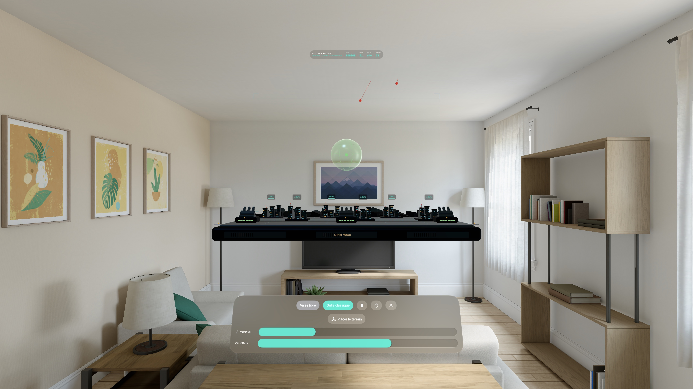

Défense arcade spatiale · Apple Vision Pro
Tenez la ligne. Protégez les villes.
Bastion Protocol transforme votre espace en champ de bataille miniature. Défendez six villes face aux missiles ennemis en plaçant chaque interception au bon endroit dans le ciel.
L’aperçu navigateur montre une version antérieure du jeu. L’app Vision Pro ajoute la visée libre, l’intégrité des villes, les tourelles mobiles et le son spatial.

La défense prend place chez vous
Six villes. Trois batteries.
Choisissez quand et où tirer. Les munitions reviennent entre les vagues ; les dégâts des villes restent.
Visez en trois dimensions.
Utilisez le regard et le pincement en visée libre, ou la grille classique pour régler la profondeur du tir.
Installez le combat.
Placez le plateau à une hauteur confortable, assis ou debout. Tourelles orientables et sons spatiaux accompagnent chaque vague.
Chaque interception compte
Lancez un intercepteur depuis la batterie disponible la plus proche et anticipez la trajectoire des missiles. Une explosion près d’une ville peut aussi l’endommager : mieux vaut intercepter assez haut.